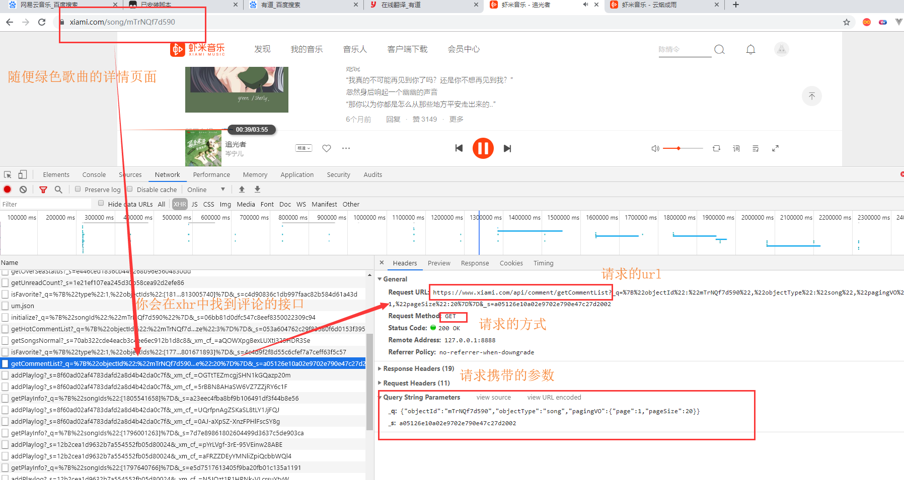
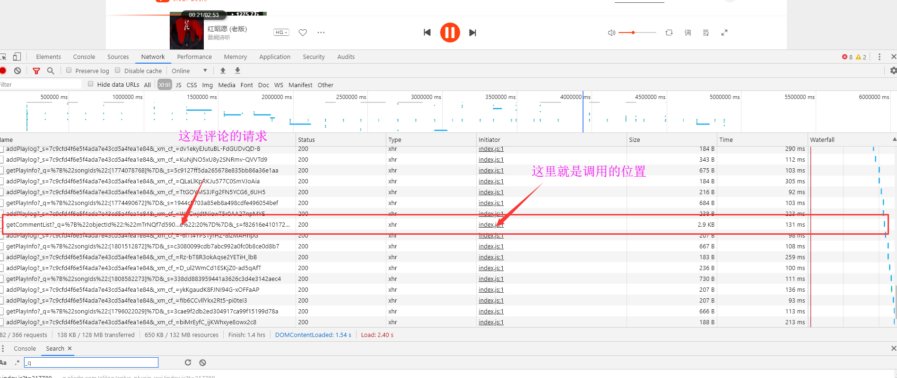
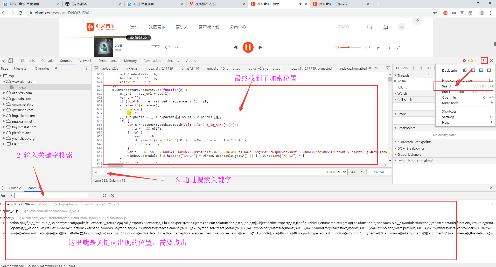
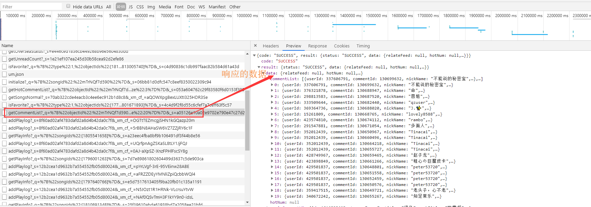

https://www.xiami.com/ 这是本次我爬取的网站
这是前后端分析的网站，这种类型的web其实很好的，只要找对了API，成功发生请求，那么想要的数据就直接获取到了
这里就拿绿色这首歌为例子：https://www.xiami.com/song/mTrNQf7d590，分析她的评论的APi接口
请求分析，主要知道APi的地址，请求的参数，请求的方式，还有就是请求头需要携带什么参数。

这是本次访问携带的参数数据
_q: {"objectId":"mTrNQf7d590","objectType":"song","pagingVO":{"page":1,"pageSize":20}}
_s: a05126e10a02e9702e790e47c27d2002
开始分析吧(_s的值和你们的不一样，这是正常的)
_q:一个明文，数据都能找到 objectId就是url中的一个数据，不难拿到，objectType这里是固定为song的，pagingVO就是页数和每一页多少条数据，_q就是很容易的。
_s:它是一个32为的随机字符串，第一时间应该想到md5生成的32位的数据，_s很有可能就是md5加密过后的，至于加密数据是什么？以后台开发来说，md5它是无法可逆的，后端拿到这个md5加密串不能反解密出来，所以只能根据前端传来的数据，将数据通过md5加密，再和前端传来的md5字符串进行比较，比较成功的说明这次请求是通过web网页来的(理想状况，排除别人知道你的加密方法)。不同的歌曲，不同的评论页数页数_s是不一样的，那么这个md5加密的数据肯定有标识(指不一样的数据)。很多后台会拿时间戳作为加密数据之一，去生成md5加密字符串，不过前端要将这个时间戳传到后台。这里呢，并没有传时间戳到后台，那么猜测加密的数据很有可能就是_q的值_q: {"objectId":"mTrNQf7d590","objectType":"song","pagingVO":{"page":1,"pageSize":20}}
_s: a05126e10a02e9702e790e47c27d2002不管你刷新多少次，请求参数是一样的，时间是一直再变的，_s的值依旧没有变化，所以直接排除时间戳作为加密数据的可能，_q的值一直没变，_s的值也没有变化，那么_q的值是_s的加密参数的可能性变大。
上面我们一直看的是本首歌曲的第一页的评论信息，我们试试看第二页评论的信息，看看请求参数有何变化，翻到页面最下面，点击更多评论，我们继续找到评论的接口
_q: {"objectId":"mTrNQf7d590","objectType":"song","pagingVO":{"page":2,"pageSize":20}}
_s: f82616e410172d3e76b9b48561a0d257_q的值发生了变化，_s的值相应的发生了变化，我们可以确定的是_q就是_s的加密数据之一(可能还有其他的加密数据)
_s的加密方式破解
找js加密的位置是有一定难度的，你访问一个web页面，请求的js文件有很多，单个js文件的内容有大，还有就是js文件又是混淆的，以a,b,c,d,e...这些名字命名，你都不知道代表什么意思。
我找位置的方式就是：先看本次请求是哪个js文件，js文件的哪个位置发送的，再顺着往上慢慢找。这只是一个思路。

还有一种就是思路就是，通过search搜索关键字，通过关键字的位置，找到加密位置。

这里，最终我通过搜索关键字_q,找到了加密位置。位置找到了，通过chrome的开发者工具进行js断点调试。我就讲下这段js大概。
_q的值需要我们自己按照需要自己生成相应的字符串
_s的指就是这行代码:a.split("_")[0] + "_xmMain_" + e._url + "_" + t
a:就是cookie中xm_sg_tk对应的value值
e._url：比如评论请求的url地址为 https://www.xiami.com/api/comment/getCommentList
那么e._url就是/api/comment/getCommentList
t:就是_q的值
最终将它他们拼接成字符串，最终通过md5的方式加密，这就是_s的值注意:
关于上面的a，也就是cookie是xm_sg_tk的value的获取。在你发送Api请求之前，先去请求下主页，拿到对应cookie的值。
_q很明显就是json字符串，通过json.dumps字典生成，但是注意，字典是无序的，json.dumps出来的字符串顺序会不一样。
成功请求之后，就会拿到响应的数据

这里我就分析了评论这一个APi，其他Api的加密方式也是一样。只是_q的值和对应的url地址不一样。需要爬取其他数据相应改下就是。
import requests, pprint
from fake_useragent import UserAgent
from hashlib import md5
class XiaMi:
ua = UserAgent()
DOMAIN = "https://www.xiami.com"
# 各个API接口地址
# 每日音乐推荐
APIDailySongs = "/api/recommend/getDailySongs"
# 排行榜音乐
APIBillboardDetail = "/api/billboard/getBillboardDetail"
# 所有排行榜
APIBillboardALL = "/api/billboard/getBillboards"
# 歌曲详情信息
APISongDetails = "/api/song/getPlayInfo"
def __init__(self):
self.session = requests.Session()
self.headers = {
"user-agent": self.ua.random
}
self.session.get(self.DOMAIN)
def _get_api_url(self, api):
return self.DOMAIN + api
# 获取每日推荐的30首歌曲
def get_daily_songs(self):
url = self._get_api_url(self.APIDailySongs)
params = {
"_s": self._get_params__s(self.APIDailySongs)
}
result = self.session.get(url=url, params=params).json()
self._dispose(result)
# 获取虾米音乐的音乐排行榜
def get_billboard_song(self, billboard_id: int = 0):
'''
:param billboard_id: 各类型的排行榜
:return: 排行榜音乐数据
'''
if not hasattr(self, "billboard_dict"):
self._get_billboard_dict_map()
assert hasattr(self, "billboard_dict"), "billboard_dict获取失败"
pprint.pprint(self.billboard_dict)
if billboard_id == 0:
billboard_id = input("输入对应ID，获取排行榜信息")
assert billboard_id in self.billboard_dict, "billboard_id错误"
url = self._get_api_url(self.APIBillboardDetail)
_q = '{\"billboardId\":\"%s\"}' % billboard_id
params = {
"_q": _q,
"_s": self._get_params__s(self.APIBillboardDetail, _q)
}
result = self.session.get(url=url, params=params).json()
self._dispose(result)
# 生成一个排行榜对应的字典映射
def _get_billboard_dict_map(self):
billboard_dict = {}
billboards_info = self.get_billboard_all()
try:
if billboards_info["code"] == "SUCCESS":
xiamiBillboards_list = billboards_info["result"]["data"]["xiamiBillboards"]
for xiamiBillboards in xiamiBillboards_list:
for xiamiBillboard in xiamiBillboards:
id = xiamiBillboard["billboardId"]
name = xiamiBillboard["name"]
billboard_dict[id] = name
self.billboard_dict = billboard_dict
except Exception:
pass
# 获取所有的排行榜信息
def get_billboard_all(self):
url = self._get_api_url(self.APIBillboardALL)
params = {
"_s": self._get_params__s(self.APIBillboardALL)
}
result = self.session.get(url=url, params=params).json()
self._dispose(result)
# 获取歌曲详情信息
def get_song_details(self, *song_ids) -> dict:
'''
:param song_ids: 歌曲的id，可以为多个
:return: 歌曲的详情信息
'''
assert len(song_ids) != 0, "参数不能为空"
for song_id in song_ids:
if not isinstance(song_id, int):
raise Exception("每个参数必须为整型")
url = self._get_api_url(self.APISongDetails)
_q = "{\"songIds\":%s}" % list(song_ids)
params = {
"_q": _q,
"_s": self._get_params__s(self.APISongDetails, _q)
}
result = self.session.get(url=url, params=params).json()
return self._dispose(result)
# 获取歌曲的下载地址
def get_song_download_url(self, *song_ids):
download_url_dict = {}
song_details = self.get_song_details(*song_ids)
songPlayInfos = song_details["result"]["data"]["songPlayInfos"]
for songPlayInfo in songPlayInfos:
song_download_url = songPlayInfo["playInfos"][0]["listenFile"] or songPlayInfo["playInfos"][1]["listenFile"]
song_id = songPlayInfo["songId"]
download_url_dict[song_id] = song_download_url
print("歌曲下载地址为:", download_url_dict)
# 处理爬虫获取到的数据，这里我就输出值
def _dispose(self, data):
pprint.pprint(data)
return data
# 获取加密字符串_s
def _get_params__s(self, api: str, _q: str = "") -> str:
'''
:param api: URL的地址
:param _q: 需要加密的参数
:return: 加密字符串
'''
xm_sg_tk = self._get_xm_sg_tk()
data = xm_sg_tk + "_xmMain_" + api + "_" + _q
return md5(bytes(data, encoding="utf-8")).hexdigest()
# 获取xm_sg_tk的值，用于对数据加密的参数
def _get_xm_sg_tk(self) -> str:
xm_sg_tk = self.session.cookies.get("xm_sg_tk", None)
assert xm_sg_tk is not None, "xm_sg_tk获取失败"
return xm_sg_tk.split("_")[0]
def test(self):
# self.get_daily_songs()
# self._get_xm_sg_tk()
# self.get_billboard_song(332)
# self.get_billboard_all()
# self.get_song_details(1813243760)
# self.get_song_download_url(1813243760)
pass
if __name__ == '__main__':
xm = XiaMi()
xm.test()